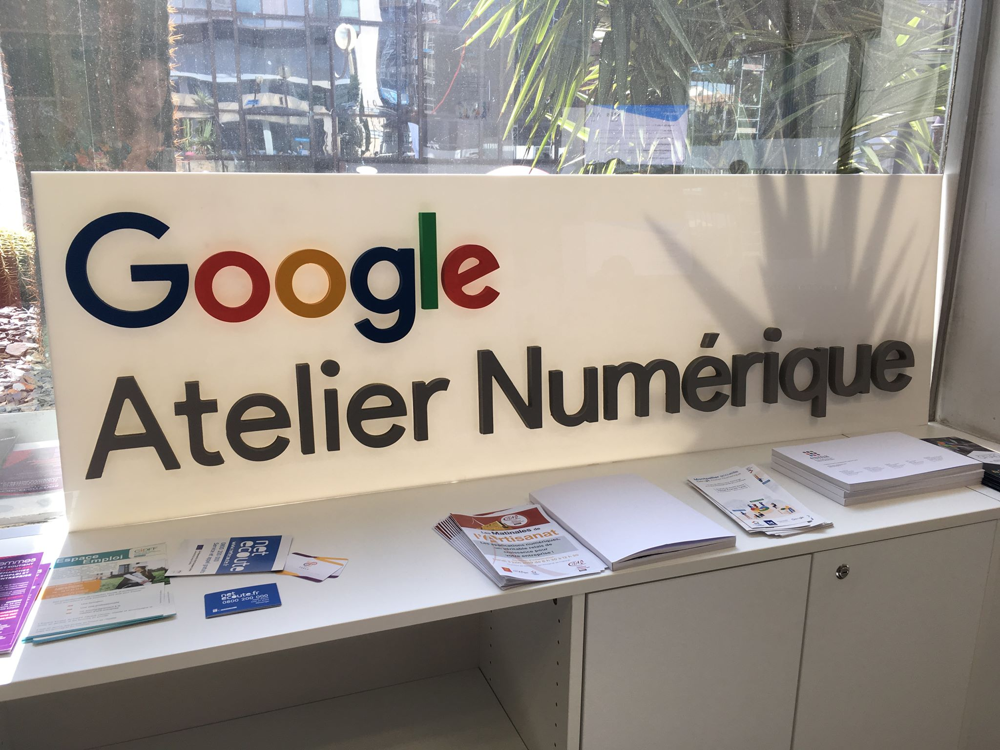

Studio Gazoline, agence de communication web imposante au sein de l’Hérault depuis 20 ans ne cesse d’innover et de se développer, c’est pourquoi elle suscite l’intérêt des clients et des professionnels.
L’ère du digital est plus que jamais ancrée dans nos vies, quel qu’en soit le domaine il ne cesse de s’implanter à en devenir omniprésent, primordial dans notre quotidien. C’est la raison pour laquelle je souhaite accompagner ce changement. Sensible au monde du digital, devenir une actrice de la digitalisation est l’un de mes grands objectifs.
L’agence de communication globale Studio Gazoline est l’endroit le plus propice pour acquérir de l’expérience, mais pas n’importe laquelle. Effectivement, cette agence multi-compétences composée d’une équipe d’experts pluridisciplinaire est sans aucun doute le meilleur choix à faire si l’on souhaite se perfectionner, être accompagnée et entourée de passionnés spécialistes, dans un environnement prospère et favorable à un apprentissage et une productivité d’excellence, notamment du fait qu’elle est agréée et certifiée Google Partner mais aussi labélisée French Tech, ce qui est un gage de qualité irréprochable.

Spécialisée et experte dans une multitude de domaines, notamment la communication visuelle, la création de sites web, et la stratégie digitale, travailler auprès d’elle serait s’exposer et découvrir en permanence de nouveaux domaines des plus innovants, tout en acquérant une riche expérience. Et pourquoi ne pas devenir à mon tour une experte dans plusieurs domaines ?
Ayant donc une certaine maîtrise de certains domaines comme cité précédemment, c’est-à-dire en informatique et bureautique, en économie et sociologie, et en histoire et géopolitique, en plus d’un peu d’expérience en développement web, mon profil correspondrait parfaitement à leurs besoins de travailleurs passionnés du web.